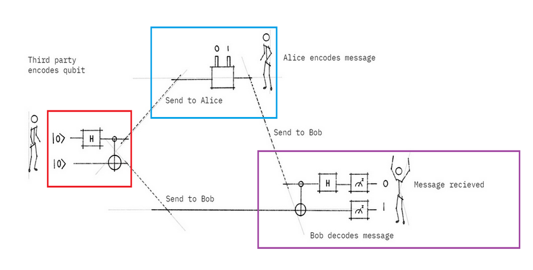
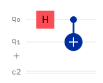
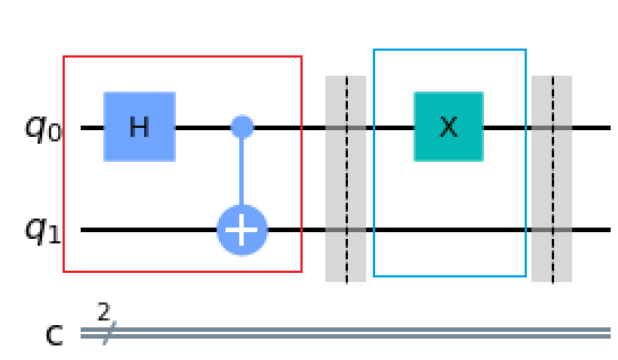
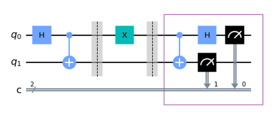
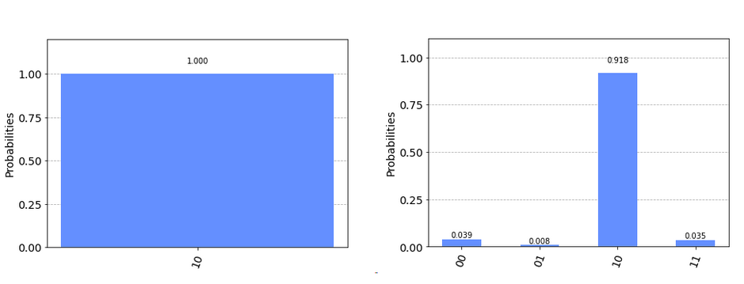

Superdense Coding Tutorial¶
Now that we’ve explored measurement as part of some simple simulations, it’s time to take a look at some interesting circuits that can be build and run on a real quantum computer! Go ahead and download the Jupyter notebook for this exercise and then open it inside the IBMQ experience quantum lab.
Let’s do a little thought experiment with our good friends Alice and Bob. They still haven’t mastered interplanetary communication!
The new communications channel set up by NASA on Mars is still in its testing phases, and so its capacity is limited. Since Alice and Bob still share an entangled state (each has one of the two entangled qubits), Alice wonders if it is possible to send multiple bits of classical information to Bob using just her half of the state and some quantum gates. This way, she can avoid overloading the channel and share as much information with Bob as she likes!
What happens is that Alice will apply a specific quantum gate to her qubit (corresponding to the information she wants to send) and then send her half of the entangled state to Bob. Bob will measure both his and Alice’s qubits, and determine the two bits of information that Alice wanted to send to him. It seems as if Alice has ‘sent’ two bits of information through a single qubit! This is why this is called superdense coding.
I’ve split up this circuit into three sections: red, blue, and purple, representing one block of the circuit. We’ll go through each of these blocks in order to build the circuit!

This circuit illustrates something fundamentally important about quantum information: a resource (our entangled state) created at an earlier time with no purpose in mind can be used at a later date to transmit information. The entangled particles haven’t seen each other since they were created, and yet they can be used to share this information. That’s wild!
First, we have to entangle the particles. Let’s do that by creating the following circuit inside the interactive code editor:

This circuit will create a Bell state, written as \(|00\rangle\frac{1}{\sqrt{2}} + |10\rangle\frac{1}{\sqrt{2}}\).
The first of these states \(|00\rangle\) corresponds to both particles being in the 0 state and the second, \(11\rangle\) to both of them being in the state. All this means is that the two qubits, q0 and q1 are either both 0 or both 1 when measured. There is a 50% chance that the first qubit will be measured as either 0 or 1, and a 100% chance of getting the same measurement for the second qubit. The outcome of a measurement on this type of entangled state, called a Bell state, will always be correlated. You might remember this from the section on entanglement.
If you build this circuit in the full circuit composer, you’ll be able to see the states on the Bloch sphere, as well as the measurement outcomes listed above.
If we measure the first particle of this Bell state and get a 1, what will the outcome of the second measurement be?¶
0, 100% certain
1, 50% certain
1, 100% certain
1, 100% certain.
Now let’s create Alice’s part of the circuit. Alice can transmit any combination of two classical bits. How many combinations are there?¶
2
1
4
4: we have two qubits and each can be 0 or 1. So we can have 00, 01, 10, or 11 as bit combinations.
To create Alice’s part of the circuit, we will have to apply gates conditionally: that is, for a specific message that we want to send, we will apply different combinations of gates. It’s beyond the scope of this activity to determine exactly which gates need to be used, so a function called encode_message has already been written for this purpose. Base on the value in the string message, this function will apply the necessary gates to Alice’s part of the entangled state. You can modify the message you are sending by changing the value of this string!
In this example, I used a message value of ‘01’.
You can see that we’ve completed two parts of the circuit already!

Now on to the last part of the circuit! To recover the information that was sent, Bob basically has to ‘undo’ the entanglement that was done in the red block. He can do this by applying the entanglement circuit in reverse. Add a reversed version of the red block circuit to your current circuit in the editor.
Then, to obtain the classical bits Alice was sending, Bob has to transform his quantum information to classical information by measuring both qubits! Let’s add this measurement to the circuit as well.
The final circuit Block should look like this:

Now, run the cell that submits the circuit to the quantum simulator. The quantum simulator is a classical simulation of what is likely to happen on an idealized quantum computer.
What is the output of your measurement? Is it what you expected? Try changing the message to see what happens.
What is the accuracy of the simulation? A bar graph and Bloch sphere plot is provided to help you visualize the data.
We can also run this circuit on a real quantum computer to see how it will behave differently from an idealized case. The computers are typically very busy so there may be a bit of a wait time. *It may be best to do this in breakout rooms and have one person/room run the circuit.
A job monitor has been added to let you know when the circuit has executed. Plot the results. What is (are) the output(s) of the measurement? What is the accuracy of the real quantum computer? If you noticed any changes in accuracy from the simulator, discuss why you think they may arise!
Below is a sampling of results for the simulator (left) and quantum (right) runs.
